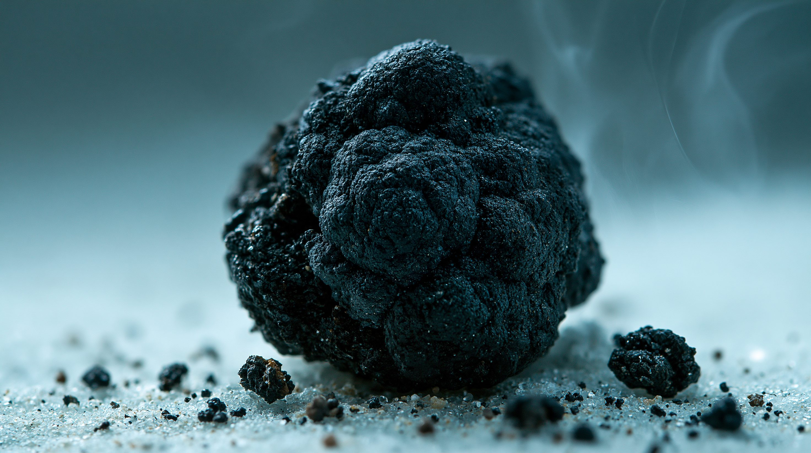
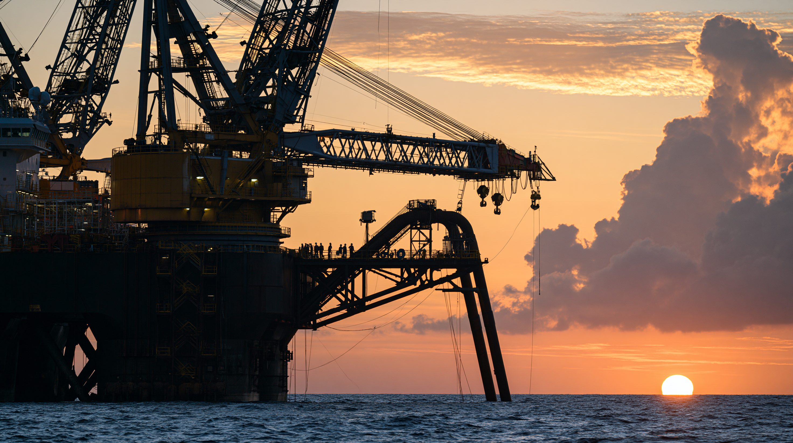
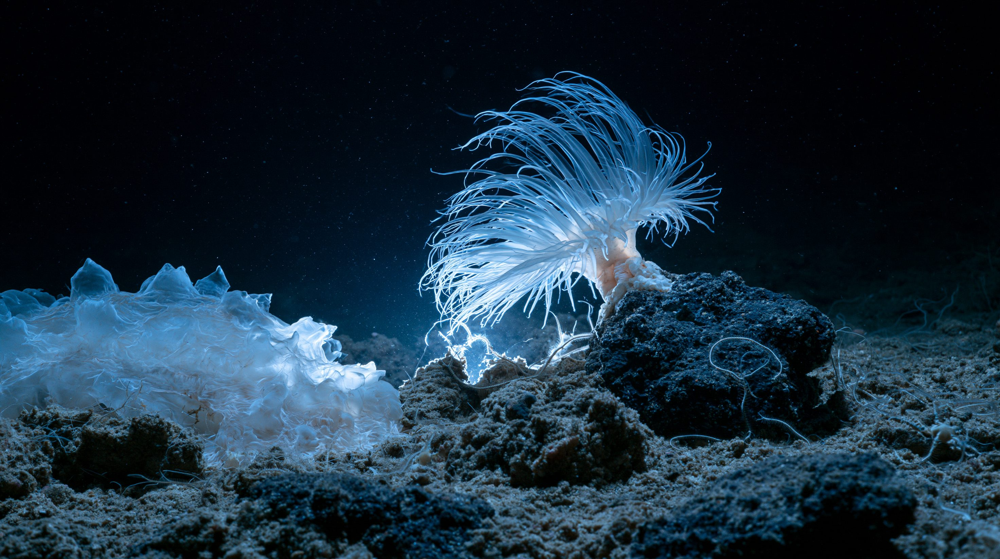
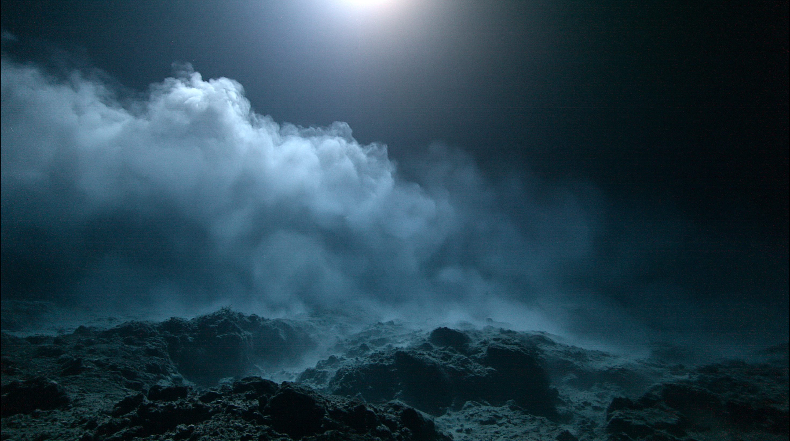

01論点 — 誰のものでもない海底を、誰が最初に掘るのか
ハワイとメキシコの間、太平洋のまん中に「クラリオン・クリッパートン海域（CCZ）」と呼ばれる広大な海底平原がある。水深は4,000〜6,000メートル。太陽の光は届かず、水圧は地上の数百倍。その暗闇の底に、ジャガイモほどの大きさの黒い塊が、まるで畑に撒かれた種のように無数に転がっている。
マンガン団塊と呼ばれるこの塊には、マンガン・ニッケル・コバルト・銅が凝縮している。いずれも電気自動車のバッテリーや送電網に使われる金属だ。CCZに眠る団塊の資源量は推定211億乾トン（水分を除いた乾燥重量での換算値。資源量を示す際の標準的な単位）。含まれるニッケルやコバルトの量は、陸上の全埋蔵量を上回るという推計もある。海底は、手つかずの巨大な鉱山なのだ。
問題は、そこが誰の国の領土でもないことにある。国連海洋法条約は、どの国の管轄にも属さない公海の海底を「人類の共同遺産」と定めた。人類全体のものだから、一国や一企業が勝手に取ってはならない——そのために設けられたのが、国際海底機構（ISA）という国際機関である。
では、なぜいま掘られようとしているのか。ISAは1994年の設立以来、30年余かけても採掘のルール（採掘規章）を完成させられずにいる。そしてルールの空白が続くなか、条約そのものに加わっていない国が、自国の法律で許可を出し始めた。ルールが決まる前に既成事実が積み上がるとき、「人類の共同遺産」は何を意味するのか。
3つの論点
何が眠っているのか
深海底のマンガン団塊に、電池に要るニッケル・コバルト・銅・マンガンが凝縮している。陸上の埋蔵量を上回るとの推計もあり、脱炭素の資源需要を背景に「最後のフロンティア」と見なされている。
なぜルールがないのか
公海の海底を管理する国際海底機構は、採掘規章の交渉を続けながら30年以上まとめきれていない。環境基準・利益配分・責任の所在という難題が、加盟国の利害対立で決着しないままだ。
何が起きているのか
国連海洋法条約を批准していないアメリカが、国内法にもとづく独自の許可手続きで先行しようとしている。国際的な枠組みの外側で採掘が始まれば、「人類の共同遺産」という原則は空文化しかねない。
用語解説
マンガン団塊
深海底に転がるジャガイモ大の黒い塊。数百万年かけて金属が沈殿してできる。マンガン・ニッケル・コバルト・銅を含む。多金属団塊とも呼ぶ。
クラリオン・クリッパートン海域（CCZ）
ハワイとメキシコの間に広がる太平洋の海底平原。日本の国土の十数倍にあたる広さで、団塊が最も豊富に分布する。探査契約が集中する主戦場。
国際海底機構（ISA）
国連海洋法条約にもとづき1994年に設立された国際機関。本部はジャマイカ。公海の海底鉱物資源を人類全体のために管理し、探査・採掘の許可とルール策定を担う。
国連海洋法条約（UNCLOS）
1982年採択の「海の憲法」。公海の海底を「人類の共同遺産」と規定した。170を超える国・地域が加わるが、アメリカは批准していない。
人類の共同遺産
公海の海底資源は特定の国のものではなく人類全体のものであり、その利益は開発途上国を含めて公平に配分されるべきだという原則。深海採掘を巡る対立の根幹にある考え方。
採掘規章（マイニング・コード）
ISAが定める、深海底の探査・採掘の規則群。環境保護基準や利益配分、事故時の責任などを定めるもので、商業採掘の前提となる。交渉が続き未完成。

争奪の対象は、この黒い塊だ。数百万年かけて海水中の金属が沈殿してできたマンガン団塊に、電池に要るニッケル・コバルト・銅が凝縮している。※イメージ画像（生成AI）
02タイムライン — 60年越しの「深海の夢」と、ルールの空白
1960〜70年代
深海の富への熱狂と、最初の挫折
海底の団塊が莫大な富をもたらすという期待が広がり、欧米や日本の企業連合が試験採鉱に乗り出した。だが技術的な困難と、陸上鉱山に対するコスト競争力の低さから、熱狂はやがて冷めていった。
試験採鉱が行われる
採算が合わず停滞
1982年
国連海洋法条約の採択 — 海底は「人類の共同遺産」へ
公海の海底とその資源を、特定の国のものではなく人類全体のものと定めた。開発の利益は途上国を含めて公平に配分されるべきだという原則が国際法に書き込まれた。ただしアメリカは、深海底制度が自国企業に不利だとして批准を見送った。
共同遺産の原則を明文化
アメリカは未批准のまま
1994年
国際海底機構（ISA）が発足
条約の発効にともない、公海の海底資源を管理する国際機関がジャマイカに設立された。各国や企業に探査契約を発給する一方、商業採掘のルールづくりという宿題を背負うことになった。
探査契約の発給が始まる
採掘ルールは先送り
2021年
ナウルが「2年ルール」を発動 — 時限爆弾を仕掛ける
太平洋の島国ナウルが、企業をスポンサーする立場から条約の規定を発動した。「2年以内に規章を完成させよ。できなければ、暫定的な条件で採掘申請を審査せよ」——ルールづくりを加速させる狙いだったが、結果的に制度の空白を露呈させる引き金となった。
2年の期限を突きつける
交渉が一気に緊迫化
2023年
期限切れ — それでも規章は完成せず
2年の期限が到来したが、環境基準や利益配分をめぐる対立は解けず、規章は未完成のまま残った。同時に、モラトリアム（一時停止）を求める国が増えはじめ、ISAの内部で推進派と慎重派の分裂が鮮明になった。
規章は未完成のまま
モラトリアム要求が拡大
2025年4月
アメリカが独自路線へ — 大統領令14285
トランプ大統領が大統領令14285に署名し、海底鉱物の探査と商業回収でアメリカが主導する方針を打ち出した。根拠となるのは条約ではなく、1980年制定の国内法（深海底硬質鉱物資源法）である。国際的な枠組みの外側で許可を出す道が開かれた。
国内法で許可を出す方針
中国が国際法違反と反発
2026年1月
手続きの簡素化 — 申請から許可までを一本化
アメリカ海洋大気庁（NOAA）が最終規則を公布し、探査ライセンスと商業回収許可を一つの申請で処理できる手続きを新設した。審査の迅速化を掲げるこの改定は、企業にとって参入のハードルを大きく下げるものだった。
探査と採掘の申請を統合
審査の迅速化を明言
2026年3月
二つの出来事が同じ月に — 申請受理と、交渉決裂
3月9日、NOAAはザ・メタルズ・カンパニー（TMC）の子会社による統合申請を「実質的に法定要件を満たす」と判定した。新手続きの第1号である。ところが同じ3月、ジャマイカで開かれたISA理事会は採掘規章の合意に至らないまま閉幕した。国際ルールが決まらないうちに、一国の国内手続きだけが前に進んだ。
アメリカで申請第1号が前進
ISA理事会は合意できず
2026年7月（進行中）
正念場を迎えるISA第31会期 — 「不遵守」契約者の去就
ISA第31会期の後半（7月13〜31日、ジャマイカ）が開かれている。焦点の一つが、無許可の単独採掘を試みたとされるナウル・オーシャン・リソーシズ（NORI）とトンガ・オフショア・マイニング（TOML）の探査契約を更新するかどうかだ。法律技術委員会（LTC）による不遵守調査の報告もこの会期に予定されており、規章の行方だけでなく、既存契約者への対応そのものが問われている。
NORI・TOMLの契約更新が争点
LTCの不遵守調査報告も焦点

これは構想でも研究段階の話でもない。船と重機はすでに海の上にあり、あとは許可が下りるのを待っている。※イメージ画像（生成AI）
036つの視点 — 掘りたい者、止めたい者、決められない者
深海採掘をめぐる対立は、単純な「開発 対 環境」ではない。制度の外から動く国、制度の中で優位を固める国、決められない国際機関、生き残りを賭ける企業、割れる島国、そして警告する科学者——立場はいくつもの層に分かれている。下のバーは採掘への姿勢を、停止要求（左）⇔ 推進（右）で示す。
「加わっていない条約に、縛られる理由はない」
核心的主張
国連海洋法条約を批准していないため、ISAの管轄下にないという立場をとる。1980年制定の国内法にもとづき独自に許可を出す道を選び、2026年1月には申請手続きを簡素化した。背景にあるのは、重要鉱物の供給を中国に依存する現状からの脱却という戦略的な動機だ。
最大の関心：重要鉱物の自前確保と、対中依存の解消。
「一国の判断で海底を切り取ることは、国際法への挑戦だ」
核心的主張
アメリカの大統領令を「ISAの権限を損ない、国際法に違反する」と厳しく批判した。もっとも中国自身は、ISA体制の内側で最多級の探査契約を確保しており、ルールに従う姿勢を示しながら着実に権益を積み上げている。制度を守ることが、そのまま自国の優位につながる立場だ。
最大の関心：制度内での権益確保と、アメリカの単独行動の封じ込め。
「人類の共同遺産を預かる機関が、その使い方を決められずにいる」
核心的主張
公海の海底を人類全体のために管理する立場にある。だが30年以上かけても採掘規章を完成させられず、2026年3月の理事会も合意なく閉幕した。加盟国が推進派と慎重派に割れるなか、決定を先送りするほど「制度の外」で既成事実が進むという板挟みに陥っている。
最大の関心：制度の実効性と、自らの権威の維持。
「熱帯雨林を切り拓くより、人の住まない海底の方が傷は浅い」
核心的主張
陸上鉱山は森林破壊や住民の強制移転、児童労働といった問題を抱えており、深海採掘の方が社会的・環境的な負荷は小さいと主張する。ザ・メタルズ・カンパニーなどは長年の探査投資を抱え、収益化の遅れが資金繰りに直結するため、許認可のスピードが死活問題となっている。
最大の関心：早期の商業化と、投資回収の実現。
「海は我々の暮らしそのもの。だからこそ、判断が割れる」
核心的主張
立場は一枚岩ではない。ナウルのように企業をスポンサーし、乏しい財源を補う収入源として期待する国がある一方、パラオやフィジーなどは漁業資源と海洋環境への打撃を恐れてモラトリアムを求めてきた。同じ海に生きながら、採掘は希望にも脅威にもなりうる——その分裂こそが島嶼国の実像だ。
最大の関心：財源の確保と、海洋環境・漁業の保全の両立。
「失われるものを数えられないうちは、失う判断もできない」
核心的主張
CCZだけで5,578種の生物が記録され、その約9割が学名すら付いていない未記載種だという研究がある。深海生態系の全体像はまだ分かっていない。採掘で舞い上がる堆積物の濁りは広範囲に拡散し、海底の回復には数十年から千年単位を要するとされる。70カ国以上の科学者ら約1,000人がモラトリアムを求める声明に署名した。
最大の関心：深海生態系の保全と、科学的知見の蓄積。
| 立場 |
基本スタンス |
最大の主張 |
最大の関心事 |
| アメリカ | 制度の外から推進 | 批准していない条約には縛られない | 重要鉱物の自前確保・対中依存の解消 |
| 中国 | 制度内で推進 | 一国の単独行動は国際法違反 | 制度内での権益確保 |
| 国際海底機構 | 決められない | 海底は人類の共同遺産である | 制度の実効性と権威の維持 |
| 採掘企業 | 強く推進 | 陸上採掘より負荷は小さい | 早期商業化と投資回収 |
| 太平洋の島嶼国 | 賛否が割れる | 収入源にも脅威にもなりうる | 財源確保と海洋環境の保全 |
| 科学者・環境団体 | 停止を要求 | 分からないまま壊してはならない | 深海生態系の保全 |

採掘の反対側にあるのは、こうした生き物たちだ。CCZで記録された5,578種のうち約9割は、いまも学名すら付いていない。※イメージ画像（生成AI）
04データ・統計
ポリメタリック団塊の探査契約22件 — CCZへの集中
ISAがこれまでに発行した団塊の探査契約22件のうち、18件がクラリオン・クリッパートン海域（CCZ）に集中する。中国・ロシア・韓国・日本・フランス・ドイツ・イギリスなどが契約者を後援している。
出典：国際海底機構（ISA）
TMC USAの申請規模は、CCZ全体のごく一部
NOAAが審査中のTMC USAの申請区域（約65,000平方キロメートル）に含まれる団塊は推定6.19億トン。CCZ全体の推定資源量211億トンの3%に満たない。
出典：A&O Shearman／USGS
211億トン
クラリオン・クリッパートン海域に眠る団塊の推定資源量（乾トン）
5,578種
同海域で記録された生物種。うち約9割が学名のない未記載種
30年以上
国際海底機構の設立から、いまだ採掘規章が完成しない年月
05深掘り — ルールの空白が生むもの
この問題の本質は、資源の奪い合いそのものよりも、ルールが決まらないうちに現実が先へ進んでしまうという構造にある。4つの観点から掘り下げる。
① 「2年ルール」の逆効果 — 急かしたことで、空白が露呈した
ナウルが2021年に発動した「2年ルール」は、停滞する規章づくりを加速させるための一手だった。だが結果は逆に働いた。期限が来ても合意はできず、「ルールがないまま申請を審査しなければならない」という制度の穴が誰の目にも明らかになったのである。締め切りは、準備が整っていない組織にとっては前進の力にならない。むしろ、間に合わなかったという事実だけが残った。
② 批准していない国は縛れない — 「共同遺産」の弱点
国連海洋法条約は170を超える国・地域が参加する「海の憲法」だが、アメリカは批准していない。したがって、アメリカから見ればISAの管轄は自国に及ばず、国内法で許可を出すことに法的な矛盾はない——これが同国の立場だ。一方、条約を支える側から見れば、これは参加しないことで義務だけを免れ、資源の利益は受け取るという「ただ乗り」に映る。人類の共同遺産という原則は、全員が参加してはじめて機能する。一国でも外にいれば、その国が抜け道になる。
③ 何が失われるか分からない — 比較のしようがない環境影響
深海は地球最大の生息域でありながら、最も知られていない場所でもある。CCZで記録された5,578種のうち約9割は学名すら付いていない未記載種で、生態系の全体像は把握されていない。採掘機が巻き上げる堆積物の濁り（プルーム）は広範囲に広がり、銅などの金属濃度を上げて中深層の生物に影響する恐れが指摘される。しかも海底の回復には数十年から千年単位かかるとされる。元の状態が分かっていないのだから、どれだけ失われたかを測ることもできない——この「基準線の不在」が、環境影響評価そのものを難しくしている。
④ 掘る理由が揺らいでいる — 電池が変われば、前提が変わる
深海採掘を正当化してきた最大の論拠は「脱炭素にはニッケルとコバルトが要る」だった。ところがその前提は急速に揺らいでいる。コバルトもニッケルも使わないリン酸鉄リチウム（LFP）電池が、価格の安さと安定性から世界的に普及し、電気自動車の主流の一角を占めるようになったからだ。BMW・Volvo・Samsung・Googleといった企業がモラトリアムを支持しているのも、供給網としてこの資源に依存しないという判断がある。技術が需要の形を変えれば、「掘らねばならない」という前提そのものが崩れうる。急いで深海を開くことが、本当に必要なのかが改めて問われている。
深海採掘が始まるかどうかは、まだ決着していない。だが確かなのは、「人類の共同遺産」を決める場が機能しないまま、個別の国と企業の判断で現実が動きはじめているということだ。ルールが後から追いつくころには、海底にはすでに機械の跡が刻まれているかもしれない。誰のものでもない場所を守る仕組みが試されているのは、深海だけの話ではない——公海も、宇宙も、極地も、同じ問いの前に立っている。

採掘機が海底をかき分けると、堆積物の濁りが巻き上がり、広範囲に漂う。海底が元に戻るには数十年から千年単位かかるとされる。※イメージ画像（生成AI）